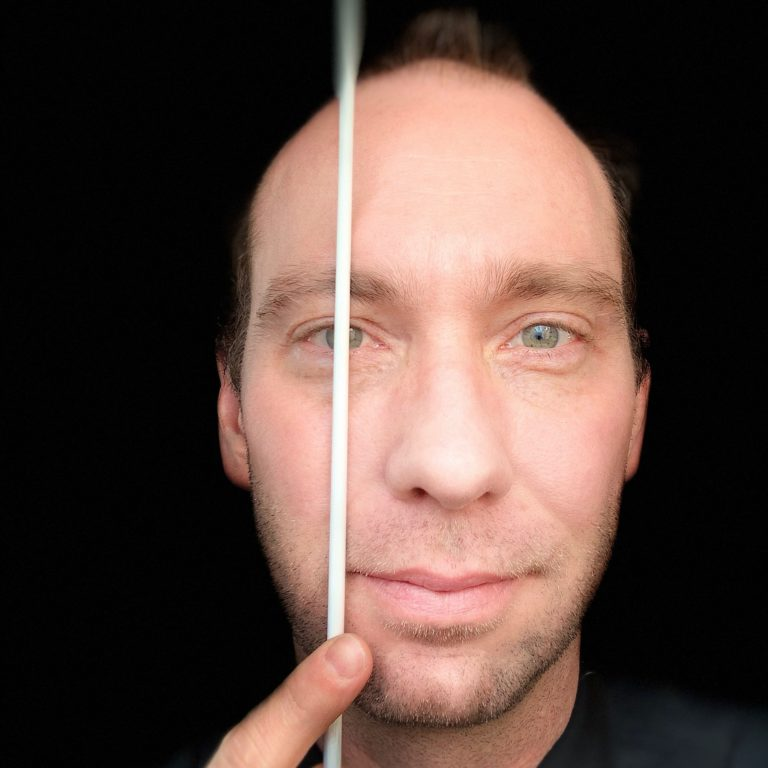

Artistic Director & Conductor
Brent Chancellor is Artistic Director and Conductor of the Ridgewood Symphony Orchestra, Music Director of the Rockland Symphony Orchestra, Founding Music Director of LUX, and Interim Music Director of the Montclair State University Opera Orchestra. He is also a cover conductor with the New Jersey Symphony Orchestra, Assistant Conductor with the New Jersey Festival Orchestra and Conductor with the prestigious International Vocal Arts Institute. Previous positions include Conducting Assistant with the Charleston Symphony Orchestra, Assistant Conductor to Stéphane Denève, Martin West and Joel Revzen at Festival Napa Valley, and Cover Conductor for concerts featuring André Watts, Leon Fleisher, Robert Levin, Seong-Jin Cho, Angel Blue and Lester Lynch.
In opera, Brent has led numerous productions, and collaborated with many accomplished musicians and young artists from The Metropolitan Opera, San Francisco Opera, La Scala and Lyric Opera of Chicago. Hailed by Mignon Dunn as “a real singers’ conductor”, from 2008-2012 he served as Assistant Conductor to Paul Nadler on productions including Ariadne auf Naxos, La Traviata, The Rake’s Progress, Don Pasquale and Lucia di Lammermoor, as well as concerts with the Israel Chamber Orchestra in Tel Aviv and l’Orchestre de la Francophonie in Montreal. He has worked with revered stage directors Marc Verzatt, Joshua Major, Dietlinde Turban Maazel, Ira Siff, Jeffrey Gall, Lawrence Edelson and Joachim Schamberger, and in 2018, stepped in last minute to lead highly praised performances of The Rape of Lucretia. Other credits include Tosca, Madame Butterfly, Don Giovanni, La Bohème, Die Zauberflöte, Suor Angelica, Les Nozze di Figaro, L’enfant et les sortilèges and Tamerlano.
A devoted music educator, Brent is rapidly gaining recognition as a unique and imaginative presenter. In 2016 he founded LUX, an orchestra dedicated to creating opportunities for young people to access and connect with symphonic music. Acclaimed performances have included Grammy Award-winning violinist and member of Snarky Puppy, Zach Brock, and fully immersive multi-media concerts in unconventional settings. In 2019, LUX became a partner orchestra with Carnegie Hall Link Up providing in-school concerts with the South Orange Performing Arts Center as part of a district-wide orchestra initiative. Brent also serves on the faculty of Montclair State University and has presented pre-concert talks and audience outreach at the Charleston Symphony Orchestra, UC Davis, California State University, Sierra College, Sonoma State University and the John J. Cali School of Music. With a deep curiosity and appreciation for music across genres, in 2003, Brent spent almost four months in Uganda studying traditional ngoma drumming with Mpambire Drum Makers of Uganda. His field recordings are under consideration for archival with the Library of Congress.
An award-winning composer and advocate for new music, Brent’s music has been performed at the Festival of New American Music, Festival of the Arts, Center for Contemporary Art and NY Fashion Week. Highlights included the 2016 premiere of Crane Songs performed by contemporary flutist and TEDx presenter Cathie Apple, and special recognition for his role in founding the all-women’s choir Vox Musica. In 2010, 2005 and 2004 Brent was a featured composer and guest performer at the Festival of New American Music with the ensemble SEM-G premiering his works Vestiges for 20 flutes and cellos, On the Essence of Light and Killer for laptop and live electronics. A champion of living and contemporary composers, Brent led the 2015 New Jersey premiere of Kaija Saariaho’s Licht Bogen, and as a student, his performance of Piano Phase by Steve Reich was praised by the composer as “one of the best performances” he had heard.
A protégé of Paul Nadler (Metropolitan Opera) and Ken Lam (Charleston Symphony Orchestra), Brent holds degrees in composition, piano and conducting. He attended the Hochschule für Musik Trossingen, California State University Sacramento and the John J. Cali School of Music. He has worked with many celebrated musicians in workshops, festivals and coachings, including conductors Cristian Măcelaru, Riccardo Muti, Markand Thakar, Johannes Schlaefli and Ken Kiesler, composers George Crumb, Steve Reich, Pauline Oliveros and Aaron J. Kernis, and opera coaches Joan Dornemann, Gerald Martin Moore, Benton Hess and Sherrill Milnes. He has been invited twice to attended the prestigious Cabrillo Festival’s Composer/Conductor Workshop for new music. A native of California, Brent spent his formative years immersed in intensive drum set and percussion studies with Matt Marrucci, Mike Lawson and Johnny Rabb before studying composition, piano and percussion.
Artistic Advisor & Assistant Conductor
Edmund A. Moderacki serves as Artistic Advisor and Assistant Conductor of the Ridgewood Symphony Orchestra. Mr. Moderacki graduated with honors from Montclair State College. He holds a MA from Hunter College (CUNY) and has done additional studies at Seton Hall University, Newark State College and the Center for Understanding Media. He is currently a music teacher in the River Vale (NJ) Schools, and has been conductor of the Waldwick Concert Band since 1978. Active in education and the arts, Mr. Moderacki is president-elect of the Music Educators of Bergen County, Inc., serves as a member of the Steering Committee of Bergen County Teen Arts and sits on the boards of several arts and education organizations. He was also the conductor of the 2001 All Bergen County High School Band and RSO Project Symphony 2003 at River Vale, Riverdale, and Wayne.